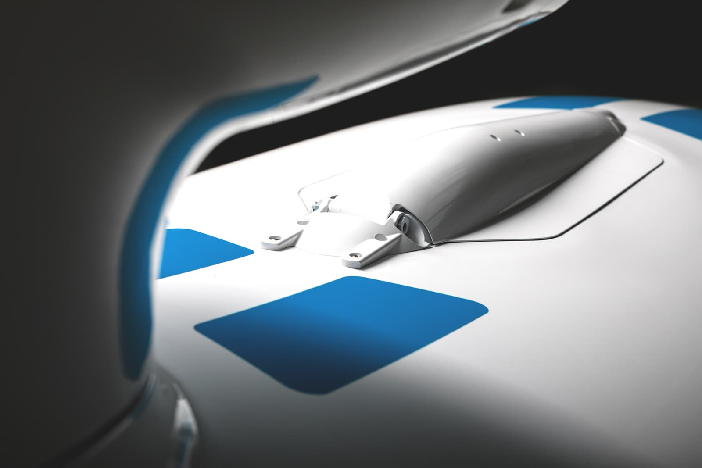

The first and only aircraft of its type in the world, FLARIS LAR 01
unites jet-tier performance with levels of safety and economic
accessibility previously reserved solely for small general aviation
units. The cutting-edge construction made overcoming many traditional
limitations possible and resulted in creation of an internationally
exceptional aircraft!
FEATURES
FLARIS LAR 1 is a single-engine jet aircraft with lightweight, composite
construction. It creates a new category of small, agile jets, ideal for
quick movement for any purpose.
SOAR TO A HIGHER LEVEL OF COMFORT
The intuition of piloting FLARIS LAR 1 is apparent in its
minimal operations, secure stall, and automatic spin recovery.
The jet was designed to be flown by a single pilot (with Garmin
G600 Txi radio and navigation system and FFAS® interactive
onboard computer acting as a copilot). The only qualification
required to fly FLARIS LAR 1 is a Private Pilot License (PPL).
REVOLUTIONARY AND ENVIRONMENTALLY FRIENDLY AVIATION
FLARIS LAR 1 is one tonne lighter than VLJ aircraft and
initiates a brand new category of High-Speed Personal Jet. Light
construction, extraordinary aerodynamics, and a cutting-edge
FJ33-5A engine operated with an ECU computer allowed a
significant reduction of fuel consumption and exhaust gas
emission. Consequently, FLARIS LAR 1 is environmentally
friendly.
COCKPIT
FLARIS LAR 1 is equipped with a versatile Garmin G600 Txi radio and
navigation system that acts as a copilot and minimizes the number of
equipment distracting the pilot.
SAFETY
It is a light jet aircraft of a completely new type, being approachable
for amateurs and satisfying the expectations of experienced pilots at
the same time

LIFT-TO-DRAG RATIO
Thanks to its exceptional lift-to-drag ratio of 18 which is
comparable to that of a glider and a drop-shaped semi-monocoque
fuselage, FLARIS LAR 1 is able to glide 18 kilometers for every
kilometer of altitude loss in a power-off setting. This gives
the pilot a lot of time to find a landing site in case of
emergency. Just a 250-meter-long grass airstrip will enable you
to perform a safe landing, thanks to a solid landing gear.
SAFETY SYSTEM
FLARIS LAR 1 is equipped with a modern parachute rescue system
for the whole aircraft.
NAVIGATION SYSTEM
The avionic system of Flaris LAR uses a popular G600Txi system
which provides maximal safety and convenience for the user. The
GTN-750 navigation system (GPS) placed in the center of the
dashboard, combines navigating function with operating
additional devices, including a radio station and a transponder.
It is equipped with a touch screen which helps to navigate a
user-friendly icon menu.
FUSELAGE
FLARIS LAR 1 is ultra-light and durable thanks to its hybrid structure.
It is made mostly of pre-impregnated carbon fibers, found in the most
modern long-haul aircraft, like A350 or Dreamliner. To ensure highest
durability and safety, the most vital large elements of the construction
(wing spars, landing-gear struts, supports of control surfaces, etc.)
are milled from aluminum, using numerical control technology.
PROPULSION
The solid and reliable FJ33-5 engine makes the Flaris jet safer than
other light aircraft. Turbofan engines are much more reliable than
reciprocating engines, and the FJ33 turbofan employed on Flaris is
especially reliable due to its mature and robust design. The design of
FJ33 is based directly on the larger FJ44 engine family which
accumulated over 10,000,000 flight hours in total, so the engine concept
has proven itself to be trustworthy. The titanium fan was proven so
tough that Williams International covers foreign object damage (FOD)
costs in its versatile and convenient engine maintenance program called
TAP Blue.
UNYIELDING QUALITY
All parts and labor needed for the maintenance of FJ33 engine
are provided by authorized service centers of Williams
International. To enhance safety, all of our engines have been
included in the Total Assurance Program (TAP Blue) by Williams
lnternational. TAP Blue provides complete maintenance of the
engine, and there are no added costs for the customer beyond a
small fee per flight-hour, so the customers are keen to act
quickly in bringing any concerns to the service center, and to
keep all of their engine inspections up to date.
EXTERIOR DESIGN
Flaris LAR1 introduces new quality to private air transport. To
complement the idea of creating means of private transportation, we
encourage the owners to have their jet painted according to their
personal preference, so the liveries highlight the private nature of the
aircraft and manifest their personality.
SPECIFICATION
Manufacturer
Metal-Master
Lenght
8,32 m / 27ft 4in
Height
2,43 m / 7ft 12in
Span
8,68 m / 28ft 6in
Specification
Number of seats
5 (1 pilot + 4 passengers)
Empty weight
900 kg
Takeoff mass
1850 kg
Power
Engine
Williams FJ33-5A
Static thrust
8,2 kN
Avionics
G 600 Txi System and FFAS
interactive onboard computer
Performance
Cruise speed
769 km/h
Stall speed
115 km/h
Service ceiling
7620 m
Range
max: 3200 km
Aerodynamics
L/D=18
FLARIS & LAR 01
Flaris LAR 01 is an answer to the challenges of contemporaneity. It lets
you forget about long and exhausting cruise flights, providing great
economic value at the same time. Our design goal was to lower the
purchase and exploitation costs to a minimum, which made our jet stand
out among the competition. It is an ideal means of transport for
business where time and comfort are as important as reasonable money
management.